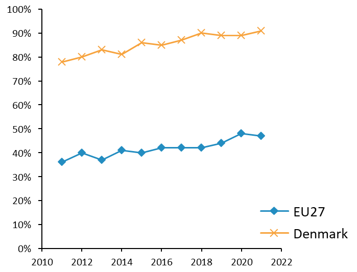
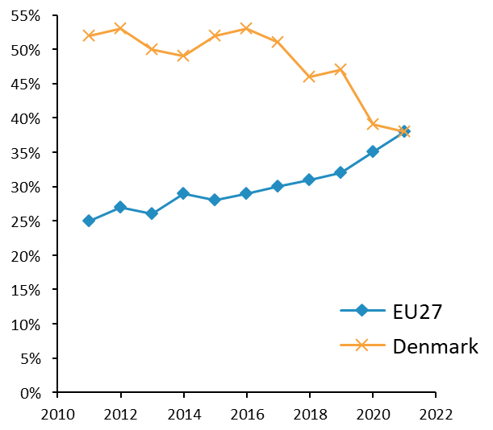
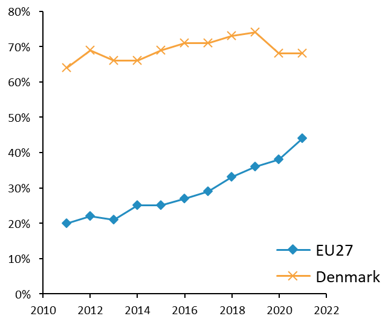
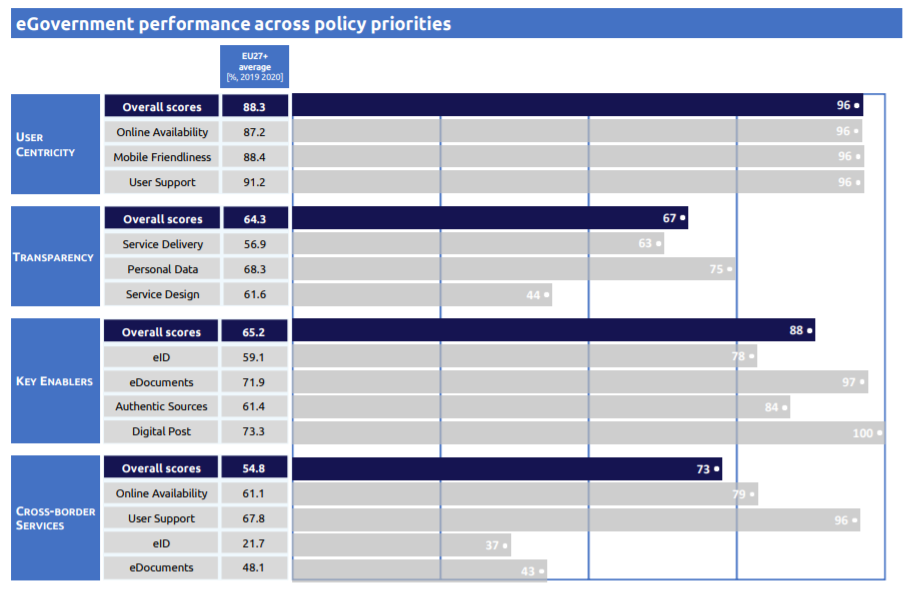
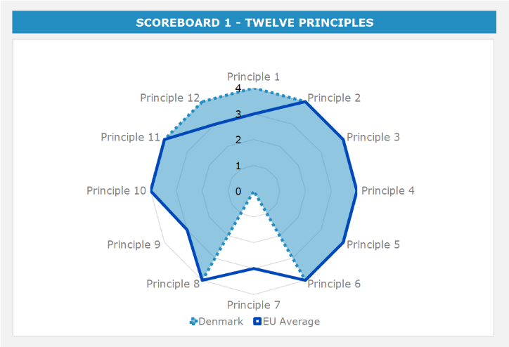
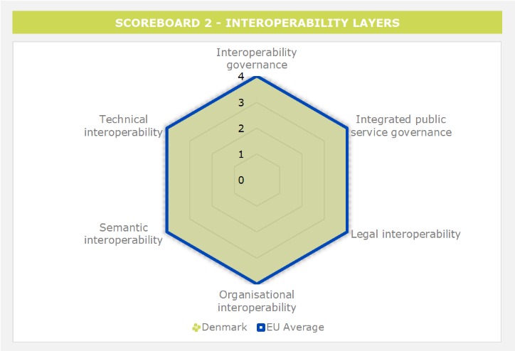
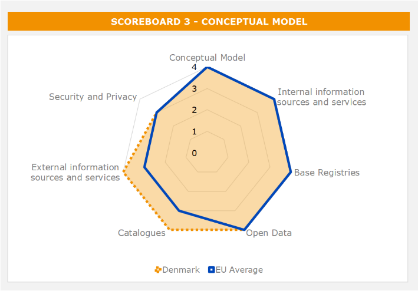
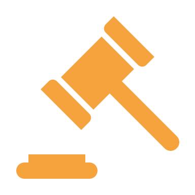
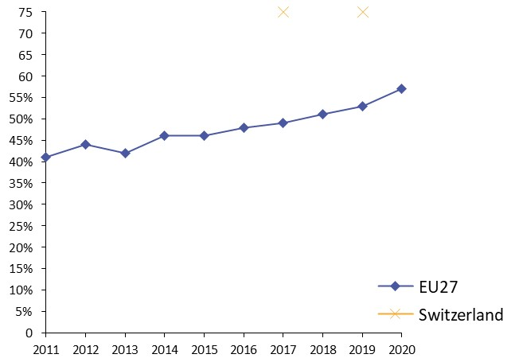

Digital Public Administration factsheet 2021
Denmark
Digital Public Administration factsheet 2022
Table of Contents
2 Digital Public Administration Highlights 10
3 Digital Public Administration Political Communications 12
4 Digital Public Administration Legislation 21
5 Digital Public Administration Governance 27
6 Digital Public Administration Infrastructure 31
7 Cross-border Digital Public Administration Services for Citizens and Businesses 41
Country
Profile
1
Country Profile
Digital Public Administration Indicators
The following graphs present data for the latest Digital Public Administration Indicators for Denmark compared to the EU average. Statistical indicators in this section reflect those of Eurostat at the time the Edition is being prepared.
Percentage of individuals using the internet for interacting with public authorities in Denmark
| Percentage of individuals using the internet for obtaining information from public authorities in Denmark  | |
Percentage of individuals using the internet for downloading official forms from public authorities in Denmark  | Percentage of individuals using the internet for sending filled forms to public authorities in Denmark  | |

Interoperability State of Play
In 2017, the European Commission published the European Interoperability Framework (EIF) to give specific guidance on how to set up interoperable digital public services through a set of 47 recommendations. The picture below represents the three pillars of the EIF around which the EIF Monitoring Mechanism was built to evaluate the level of implementation of the EIF within the Member States. It is based on a set of 71 Key Performance Indicators (KPIs) clustered within the three main pillars of the EIF (Principles, Layers and Conceptual model), outlined below.

Source: European Interoperability Framework Monitoring Mechanism 2021

Source: European Interoperability Framework Monitoring Mechanism 2021

Source: European Interoperability Framework Monitoring Mechanism 2021

Source: European Interoperability Framework Monitoring Mechanism 2021
eGovernment State of Play
The graph below presents the main highlights of the latest eGovernment Benchmark Report, an assessment of eGovernment services in 36 countries: the 27 European Union Member States, as well as Iceland, Norway, Montenegro, the Republic of Serbia, Switzerland, Turkey, Albania and Macedonia (referred to as the EU27+).
The study evaluates online public services on four dimensions:
- User centricity: indicates the extent to which a service is provided online, its mobile friendliness and its usability (in terms of available online support and feedback mechanisms).
- Transparency: indicates the extent to which governments are transparent about (i) the process of service delivery, (ii) policy making and digital service design processes and (iii) the personal data processed in public services.
- Cross-border services: indicates the extent to which users of public services from another European country can use the online services.
- Key enablers: indicates the extent to which technical and organizational pre-conditions for eGovernment service provision are in place, such as electronic identification and authentic sources.
The 2022 report presents the biennial results, achieved over the past two years of measurement of all nine life events used to measure the above-mentioned key dimensions. More specifically, these life events are divided between seven ‘Citizen life events’ (Starting a small claim procedure, Moving, Owning a car, Health measured in 2021, and Career, Studying, Family life, measured in 2020) and two ‘Business life events’ (Regular Business Operations, measured in 2021, and Business start-up, measured in 2020).

Source: eGovernment Benchmark Report 2022 Country Factsheet

Digital Public Administration Highlights
2
Digital Public Administration Highlights
Digital Public Administration Political Communications |
On 15 December 2021, the government launched a new to replace the previous strategy covering the period 2018−2021. The new national strategy strengthens national cyber and information security in society through 34 specific initiatives and increased obligations regarding the area of e.g. critical infrastructure protection.
 | Digital Public Administration Legislation |
The Act Amending the Law on the Reuse of Public Sector Information of 10 May 2021 implements the Open Data Directive 2019/1024 of 20 June 2019, which is a recast of the former Directive 37/2013/EU and Directive 2003/98/EC on the re-use of public sector information.
Digital Public Administration Infrastructure |

Digital Public Administration Political Communications
3
Digital Public Administration Political Communications
Specific Political Communications on Digital Public Administration
New National Strategy for Digitalisation
Berlin Declaration on Digital Society and Value-Based Digital Government
In December 2020, the Danish government signed the Berlin Declaration on Digital Society and Value-Based Digital Government, thus re-affirming its commitment – together with other EU Member States – to foster digital transformation in order to allow citizens and businesses to harness the benefits and opportunities offered by modern digital technologies. The Declaration aims to contribute to a value-based digital transformation by addressing and strengthening digital participation and digital inclusion in European societies.
Digital Public Administration and COVID-19
The public digital infrastructure has shown its worth during the COVID-19 pandemic, as it has enabled public services to uphold their high level even with a considerable degree of remote work within the State, regions and municipalities. Furthermore, the government has launched a range of new digital services to cope with COVID-19, including a contact-tracing app and the digital booking of tests and vaccines.
Thanks to digital-ready legislation and an advanced digital infrastructure, the central government was able to process COVID-19 stimulus checks addressed to 2.2 million recipients in a fully automatic mode and in less than eight days.
Furthermore, 2.1 million residents were able to digitally apply for and receive early holiday allowance for a total value of approximately EUR 14.5 billion. The first round of the two holiday allowance pay-outs (EUR 7 billion in October 2020) resulted in a monthly increase in retail spending of 8.2% leading to the highest ever consumer spending index in the month of October 2020.
Finally, businesses were able to apply for the Danish stimulus packages for businesses during the pandemic digitally (i.e. for lost turnover), as the Danish ‘Virksomhedsguiden’ incorporated a platform for applications and the provision of information before the final settling of accounts in the Danish Business Authority. As of 14 March 2022, the Danish Business Authority has helped 103 054 businesses with stimulus packages for a total value of approximately EUR 7.1 billion.
- Digital enhancement of SMEs;
- Digital hub for stronger digital growth;
- Digital skills for all;
- Data as driver of growth in trade and industry;
- Agile regulation in the areas of trade and industry; and
- Increased cybersecurity within companies.
Guidelines on How to Make Legislation Ready for Digitisation
A broad political agreement was reached in January 2018, requiring all legislation proposed after 1 July 2018 to comply with seven principles for digital-ready legislation. The Guidelines on How to Make Legislation Digital-Ready outline the principles and how to apply them in the legislative process.
Additionally, all proposed legislation must be assessed for potential impacts regarding project risk, organisational changes, data protection and citizens’ rights. The findings must be described in the legislative proposal together with possible mitigating measures.
To ensure that legislation is digital-ready, every legislative proposal is screened for compliance with the guidelines and consultation responses are sent to the responsible ministries by a unit established within the Ministry of Finance. Since 2018, approximately 400 consultation responses were sent.
In support of this approach, a course on digital-ready policymaking is available to legislative drafters and policy officers in government departments.
A report documenting the initiatives results was published in May 2021. The report concludes among other things that the effort is well under way and that new legislation is increasingly digital-ready. The report however also shows that existing legislation has not been systematically reviewed for digital-readiness.
As part of the agreement on the Finance Act for 2022, it was decided to continue the work on ensuring that legislation is digital-ready.
Strategy for ICT Management in Central Government
A Strategy for ICT Management in Central Government was launched on 21 November 2017, aiming to improve the operational management of information and communication technology (ICT) systems. The 13 initiatives forming the framework for a better management of ICT systems address issues such as the mandatory compliance to the central government’s ICT system portfolio management model and the periodic review by the National ICT Council of each ministry’s ICT system management. The initiatives also address the development of cross-governmental network activities amongst leaders and employees working with digitalisation and developing the technical and professional competencies and skills required to manage ICT.
Interoperability
Common Framework for Public-Sector Digital Architecture (Danish NIF)
Finally, the FDA encompasses a number of common technical solutions such as the national infrastructure solutions for ID, Digital Signature, Single Sign On and Digital Post, among others.
The application of the general governance structure is voluntary depending on relevance, logic, and business case. Nonetheless, some elements such as the digital signature and digital post are mandatory. Projects falling within the common public sector strategies shall take the FDA into account and undergo an architecture review.
Rules for Concept and Data Modelling
It is important that authorities and businesses are able to retrieve, understand, and reuse data in the public sector. Therefore, the Common Public Sector Digital Architecture recommends applying the Rules for Concept and Data Modelling to document concepts and data. The rules ensure that concepts and data are described and documented thoroughly, correctly, and consistently whilst reusing national and international models, standards and experiences to the extent possible.
Key enablers
Access to Public Information
Open Government Partnership Action Plan (2019–2021)
As part of the Open Government Partnership, which is an international collaboration, the Danish government drafted a fourth National Action Plan (2019–2021) with seven initiatives from various parts of the Danish public sector aiming at strengthening trust and transparency in public authorities, especially in public sector digitalisation.
eID and Trust Services
NemID Digital Signature and the New Danish eID, MitID
Since 1 July 2010, NemID, the national digital signature, has provided easy and safe access to a wide range of public and private self-service solutions on the web, including eBanking, tax forms, insurance and pension funds. NemID is a central element in the digital infrastructure and is a part of the everyday life of many citizens and businesses. NemID is used to either sign a document digitally or verify a user’s identity when entering a self-service. More than 5.3 million citizens aged 15 or more have a personal NemID, and more than half a million companies use NemID to log in to digital self-service solutions (e.g. Virk and Digital Post) on behalf of the business entity, which makes reporting to the public sector easier.
NemID is the result of the collaboration between the State, municipalities and regions, the financial sector, and a private contractor. In cooperation with the Danish Association of the Blind, a special solution was also developed for blind and partially sighted people.
The MitID business solution (MitID Erhverv) is scheduled to be launched in the second half of 2022 and will enable businesses and their employees to access digital self-service solutions with MitID on behalf of the business entity.
Security aspects
National Strategy for Cyber and Information Security
On 15 December 2021, the government launched to replace the previous strategy covering the period 2018−2021. The new national strategy strengthens national cyber and information security in society through 34 specific initiatives and increased obligations regarding the area of critical infrastructure protection, among others. The initiatives aim to strengthen security through:
- Robust protection of the key functions of society (16 initiatives);
- Increased level of competencies and management responsibilities (six initiatives);
- Strengthened public-private cooperation (seven initiatives); and
- Active international engagement in the fight against cyberthreats (five initiatives).
The threats related to cyberespionage and cybercrime are very high and the new national strategy seeks to address them by increasing the level of ambition regarding the efforts of the industry and in relation to the national critical infrastructure and cross-sectoral commitments. The strategy also focuses on increasing the level of the cyber and information security of citizens, businesses, and authorities.
Interconnection of base registries
Basic Data Programme
Established in 2012 and completed in 2019, the Basic Data Programme acted as a driver for growth and efficiency by improving the quality and interconnectivity of Danish base registries. The initial goal of the programme was to create a common distribution platform (the Data Distributor) for easy-to-access, secure, high-quality basic data, whilst ensuring their correctness by increasing the coordination between the different authorities responsible for the base registries. The coordination among base registries continues in the Basic Data organisation. The next generation of Data Distributor is currently under procurement with the aim of implementing it swiftly over the coming years.
National Metadata Portal
In 2021, the government announced the decision to develop and operate a national metadata portal. The portal – to be launched in 2022 –will provide private as well as public users with a searchable catalogue of the data that public sector organizations have made available. The portal will improve continuously and add further functionality and datasets.
eProcurement
eProcurement Initiatives
Several initiatives aimed at digitising procurement procedures in the public sector were initiated in January 2019 and are scheduled to end in 2023. The focus is the standardisation of electronic procurement documents related particularly to eCatalogues and eOrders. It introduces an obligation for purchasing bodies in central government and in sub-national governments to use them when procuring certain goods.
Rules for Concept and Data Modelling
SME-friendly National Tender System
A new national tender system will be developed. Businesses will be obliged to use it when they participate in a tender for a public contract. The new system will handle all tender notices, thus making it easier for SMEs to tender for a public contract.
Domain-Specific Political Communications
A Coherent and Trustworthy Health Network for All - Digital Health Strategy 2018–2022
The Digital Health Strategy 2018–2022 aims to enable hospitals, municipal health services, general practitioners and other public and private participants throughout the health sector to use digital tools to cooperate in an integrated patient-centred way, creating a personalised and coherent health system where more tasks can be performed closer to patients. Regions are now investing in developing and replacing electronic health record systems, and municipalities are radically changing the way they use health data by implementing structured electronic medical records. The strategy creates a foundation for a joint digitalisation effort of the entire Danish health system. By strengthening the digital foundation for providing healthcare across the sector, the strategy – when implemented – will also strengthen the security of personal health data and enable the safe and secure exchange of relevant data in the health sector.
White Paper: Towards a Better Social Contract with Tech Giants
In June 2021, the Danish government published a White Paper with a proposal for debate and nine principles for a more responsible and fair society with major tech companies. The White Paper aims to initiate a public debate as well as to formulate and implement Danish initiatives to address the business models of major tech companies and the platform economy to ensure that digitalisation provides the most fertile ground for Danish democracy, economy and culture.
Danish Trust Service Providers
Currently, only one trust service is registered in the Danish Trust Service List. In order to increase the number of listed trust services, the government has decided to establish an accreditation scheme allowing Danish companies to be accredited as compliance assessment bodies. This will lower the entry barrier for Danish trust service providers aiming to register to the national Trust Service List.
Emerging Technologies
Artificial Intelligence (AI)
National Strategy for Artificial Intelligence
- A responsible foundation for AI;
- More and better data;
- Strong competences and new knowledge; and
- Increased investment in AI.
Noteworthy initiatives are the presentation of six ethical principles for the use of AI, better access to public data as well as the development of common Danish language resources to support and accelerate the development of language-technology solutions in Danish.
In addition, the Finance Act of 2022 included a fund of EUR 19.2 million from 2022-2025 to accelerate the use of emerging technologies, such as AI, in the public sector.
Distributed ledger technologies
No political communication has been adopted in this area to date.
Big data
No political communication has been adopted in this area to date.
Cloud computing
Guidance on the Use of Cloud Services
Internet of Things (IoT)
No political communication has been adopted in this field to date.
High-performance computing
No political communication has been adopted in this field to date.
High-speed broadband connectivity
No political communication has been adopted in this field to date.

Digital Public Administration Legislation
4
Digital Public Administration Legislation
Specific Legislation on Digital Public Administration
Standing Committee for the Legal Framework on eGovernment
As part of the Digital Strategy 2016−2020, presented by the former government, a Standing Committee was set up to create a clear legal framework for eGovernment. The work is ongoing and divided into different sections.
Interoperability
Legislative Focus on Interoperability
Most digitalisation initiatives are developed with a focus on ensuring interoperability across different solutions. This is reflected in most of the legislation described in this chapter covering cross-sector solutions (e.g. see Sections 4.3.2 and 4.3.4). An example are the guidelines on the use of NemID (Act No. 439 of 08 May 2018 and Act No. 899 of 21 June 2018).
Single Digital Gateway
In Denmark, the Danish Business Authority and the Agency for Digital Government share the responsibility for coordinating and implementing the Single Digital Gateway (SDG) Regulation.
Currently, Denmark has not yet clarified whether national legislation will be amended in order to comply with the SDG. However, a government decision is expected, setting the appropriate level of ambition for the national implementation.
The work of converting the requirements of the regulation into actionable targets, in particular the general description of procedures and areas, is under consideration by the responsible authorities and national coordinators.
Key Enablers
Access to Public Information
Access to Public Administration Documents Act
Access to government records is governed by the Access to Public Administration Documents Act, which came into force on 1 January 2014. The act is applicable to central government and regional and municipal authorities and, as opposed to the previous act, also to enterprises fully or partially owned by central government, enterprises making decisions on behalf of central government, Local Government Denmark and Danish Regions.
The act allows any person to request documents from an administrative file. Authorities must respond as soon as possible to such requests and, if this exchange takes longer than seven days, they must inform the requestor of the reasons why the response is delayed and when an answer is to be expected.
However, all documents produced by the courts and by legislators are exempted from the provisions of the act. The same applies to documents relating to the security of the State, defence, protection of foreign policy, law enforcement, taxation, and public financial interests. In case of a decision of non-disclosure, complaints can be submitted to the Parliamentary Ombudsman, who can issue non-binding opinions on whether documents are to be disclosed.
Act Amending the Law on the Reuse of Public Sector Information
The Act Amending the Law on the Reuse of Public Sector Information of 10 May 2021 implements the Open Data Directive 2019/1024/EU of 20 June 2019, which is a recast of the Directive 37/2013/EU and Directive 2003/98/EC on the re-use of public sector information. The Open Data Directive was included in the existing landscape of open data initiatives.
eID and Trust Services
Electronic Identification and Trust Services for Electronic Transactions
Denmark is compliant with Regulation (EU) No. 910/2014 on electronic identification and trust services for electronic transactions in the internal market (eIDAS Regulation). The supporting legislation came into effect on 1 July 2016.
To provide guidelines for citizens and authorities with regard to issuance, revocation and suspension, both the Act on the Issuance of the NemID with Public Digital Signature for Physical Persons and Employees in Legal Entities and the Danish Executive Order on the Issuance and Suspension of the NemID with Public Digital Signature entered into force in 2018.
In addition, Act No. 617 of 8 June 2016 appointed the Agency for Digital Government under the Ministry of Finance as the Danish supervisory body and set out the rules for Danish trust service providers with reference to existing national legislation.
In August 2019, Denmark started the process of notifying the Danish eID (NemID) in accordance with Article 9 of the eIDAS Regulation. The process was completed in in April 2020.
Finally, Denmark started the process of notifying the new Danish eID scheme (MitID) in December 2021 in accordance with Article 9 of the eIDAS Regulation. The process is expected to be completed at the beginning of the third quarter of 2022.
In May 2021, the legislation for MitID and NemLog in came into force with the purpose of creating a framework for the digital infrastructure - with NemID being phased out and replaced by MitID and NemLog-in. The legislation ensures that the digital infrastructure can be useful in the future and that the legal foundation are in place for the public sector to use of these solutions.
Security aspects
Regulation on General Data Protection
The General Data Protection Regulation (2016/679/EU of 27 April 2016) – also known as the GDPR – replaced Directive 95/46/EC on the protection of individuals with regard to the processing of personal data and on the free movement of such data. Additional rules complementing the GDPR were included in the Danish Data Protection Act (No. 502 of 23 May 2018) and entered into force 25 May 2018. The regulation and the act are enforced by the Data Protection Agency (Datatilsynet).
Act on the Processing of Personal Data
Other laws regulating the processing of personal information by the public sector include e.g. the Public Administration Act (consolidating Act No. 433 of 22 April 2014), the Publicity and Freedom of Information Act (consolidating Act No. 145 of 24 February 2020), the Public Records Act of 1992 and the National Registers Act of 2000. These laws set out basic data protection principles and determine which data should be available to the public and which data should be kept confidential.
Interconnection of base registries
Act on the Central Business Registry
The Act on the Central Business Registry states that the Danish Business Authority is the body responsible for the maintenance and development of the Central Business Registry. The Danish Business Authority cooperates with customs, tax, and statistical authorities for the registration and maintenance of certain basic data and activities. The purpose of the registry is to:
- Record basic data on legal entities (e.g. a natural person in its capacity as employer or self-employed, a legal entity or a branch of a foreign legal person, an administrative entity, a region, a municipality or a municipal association);
- Secure a unique numbering for legal entities; and
- Make basic data available to public authorities and institutions, as well as the private sector.
Act on Building and Dwelling Registration
The Act on Building and Dwelling Registration establishes the Registry and stipulates (i) the responsible authority; (ii) how the maintenance and operational costs are allocated; and (iii) the aim of the Registry, which is to register:
- Basic data on construction and housing as well as plant and equipment; and
- Unique data on all buildings, residential and commercial units as well as technical equipment.
Act on Subdivision
The Act on Subdivision contains provisions about the registration of real properties (parcels, condominiums and buildings on leased ground) in the cadastre and about cadastral work.
Act on Spatial Information
The Act on Spatial Information contains provisions about infrastructure for spatial information. The infrastructure also includes registries contributing to the combination of data across authorities, thereby increasing the usefulness of data. The registries covered by the act include the Registry of Owners of Real Property and the Registry of Property Location.
eProcurement
Government Order concerning the Procedures for the Awarding of Public Works Contracts and Public Supply Contracts
In Denmark, Article 22 of Directive 2014/24/EU was transposed by the Executive Order on the Use of Electronic Communication in Tenders and on Public Procurement under the Thresholds with Clear Cross-border Interest (No. 1572 of 30 November 2016), under the authority of Section 194 of the Public Procurement Act (No. 1564 of 15 December 2015). All communication on a public procurement procedure within the scope of Title II and III of the Public Procurement Act and the Executive Order on the Procedures for Contracts within Water and Energy Supply, Transport and Postal Services (No. 1624 of 15 December 015) must be made digitally, according to Section 2 of the Executive Order (No. 1572), with the exception of the specific situations mentioned in Article 22(1)(a)-(d) of Directive 2014/24/EU.
Act on Electronic Invoicing
Electronic invoicing to all public authorities and institutions has been mandatory for suppliers of goods and services since 2005. To facilitate and ease cross-border trade and invoicing, the use of a cross-border network based on eDelivery has become possible for the public sector, allowing for direct eInvoicing of Danish public entities.
Denmark has implemented and transposed Directive 2014/55/EU on electronic invoicing in public procurement.
Domain-Specific Legislation
Act on Business Promotion
Article 11 of the Act on Business Promotion specifies that the Danish Business Authority will manage a digital platform for business promotion and development. The purpose of the platform is to provide information and services to start-ups and businesses in Denmark. Other authorities are obliged to deliver relevant content to the platform. The platform, called Virksomhedsguiden, was launched on 28 June 2019.
Act on Information Society Services and Electronic Commerce
Known as the eCommerce Act (No. 227), the Act on Information Society Services and Electronic Commerce of 22 April 2002 transposes Directive 2000/31/EC of 8 June 2000 on certain legal aspects of information society services, in particular electronic commerce in the Internal Market.
Mandatory Digital Self-Service
The Danish government wants at least 80% of all written communication between citizens and businesses and the public sector to be done exclusively through a digital channel.
As part of the implementation of the Common eGovernment Strategy 2011–2015 by the central, regional and local governments, the Danish Parliament passed legislation making digital self-service solutions mandatory by law (though with certain exemptions), resulting in a total of more than 100 different service areas where online self-service is mandatory (subject to certain exemptions).
The Danish Parliament passed legislation on Digital Post. As part of the implementation of the Common eGovernment Strategy 2011–2015 by the central, regional and local governments, the Danish Parliament adopted the Act on Public Digital Post in June 2012. The Act came into force on 1 November 2014 for citizens and on 1 November 2013 for businesses. The act states that citizens and businesses must have a digital letter box for receiving digital messages, letters, documents, etc. from public authorities rather than receiving paper-based letters by traditional postal service. The act also provides that digital messages transmitted through the Digital Post solution have equal legal status and effect as paper-based letters, messages, documents, etc. The act covers all citizens over the age of 15 years and all businesses.
Act on Web Accessibility
To implement Directive 2016/2102/EU, Denmark has adopted the Act on Web Accessibility (No. 692 of 08 June 2018), describing requirements for public authorities’ websites and mobile applications.
Emerging technologies
Generally, Danish regulation is technology neutral. There are different acts that affect the below-listed emerging technologies, but none is specifically aimed at them.
Artificial Intelligence (AI)
No legislation has been adopted in this field to date.
Distributed ledger technologies
No legislation has been adopted in this field to date.
Big data
No legislation has been adopted in this field to date.
Cloud computing
No legislation has been adopted in this field to date.
Internet of Things (IoT)
No legislation has been adopted in this field to date.
High-performance computing
No legislation has been adopted in this field to date.
High-speed broadband connectivity
No legislation has been adopted in this field to date.

Digital Public Administration Governance
5
Digital Public Administration Governance
National
Ministry of Finance
Agency for Digital Government
Ministry of Industry, Business and Financial Affairs
The Ministry of Industry, Business and Financial Affairs is responsible for the digital aspects of a number of policy areas which are important for the general business environment, including business regulation, intellectual property rights, competition and consumer policy, the financial sector and shipping. The Ministry works to promote digitalisation within the business environment and in relation to public services for businesses in coordination with the Ministry of Finance. The Danish Business Authority, an agency under the Ministry, is responsible for the Danish Business Portal.
Ministry of Climate, Energy and Utilities
The Ministry of Climate, Energy and Utilities is also responsible for the telecommunication policy, including roaming, competition regulation, and mobile and broadband penetration.
Agency for Governmental IT Services, Ministry of Finance
Division for Central Government ICT Management, Ministry of Finance
The Division for Central Government ICT Management resides within the Agency for Digital Government, and offers advice and guidance to governmental institutions that implement sizable ICT projects or have considerable ICT system portfolios. The Division’s main task is to evolve and maintain the ICT project model and the model for ICT system portfolio management for the State.
National ICT Council
In 2011, the National ICT Council was established by the Danish government to optimize and professionalize ICT operations in the governmental area. The ICT Council is composed of 13 senior managers, primarily from the private sector, but also from semi-public and public IT-intensive organisations. The members all have great experience in large-scale IT projects or change management. They offer solid and competent guidance on governmental IT projects and on governmental IT system portfolio management. The Division for Central Government ICT Management acts as secretariat to the ICT Council.
Data Ethics Council
In early 2019, the government created a Data Ethics Council to facilitate public debate about e.g. the use of technology, data and AI in both the public and private sector. With the aim to reap the many advantages offered by the use of data, the Data Ethics Council seeks to support ethical considerations in the development and use of technology, e.g. citizens’ fundamental rights, legal certainty and fundamental values of society. The Council is composed of members from universities, trade unions and think tanks as well as representatives from the public and private sector.
Data Distributor – Agency for Data Supply and Efficiency
Danish Data Protection Agency
Subnational (Federal, Regional and Local)
Danish Regions
Municipalities and Regions
The 98 municipalities are responsible for carrying out most tasks related to citizen service delivery, including social services, childcare, elderly care, healthcare, employment, culture, environment and planning. The five regions are mainly responsible for the health sector, e.g. hospitals. Municipal and regional bodies implement the individual action plans previously articulated at cross-governmental and departmental level and by domain area, in compliance with the overall national eGovernment Strategy.
Subnational Interoperability Coordination
Ankestyrelsen
Digital Public Administration Infrastructure
6
Digital Public Administration Infrastructure
Portals
National Portals
Borger.dk - Citizen Portal
First launched in January 2007, the Citizen Portal is a single point of entry for citizens to online information and eServices published by the public sector, regardless of the public authority. The portal is a shared infrastructure funded by national, regional and local authorities. The Citizen Portal also contains an English sub-site for international citizens. The Citizen Portal provides general, location-specific (e.g. region or municipality) and personal information, data and eServices for citizens, including access to Digital Post (more information on Digital Post below). In addition, the Citizen Portal features a range of ‘self-service’ solutions, allowing citizens to manage their communications with the public sector effectively and efficiently. Furthermore, a single sign-on solution allows citizens to receive and access information and services from several agencies, without having to log on several times.
The portal currently contains more than 2 000 self-service solutions. In 2021, 70.7 million visits were reported in the portal (with a population of 5.8 million citizens). The Citizen Portal offers a user-friendly interface, personalisation of content and syndication of borger.dk content, as well as flexibility for authorities wishing to add location-specific content to the portal. The most recent user survey shows that 92% of the users are ‘satisfied’ or ‘very satisfied’ with the Citizen Portal and 91% of the users feel safe using it.
My Overview
My Overview is the citizens’ personal page on the Citizen Portal. Here, citizens can log on using their MitID to access some of the personal information public authorities have registered, such as information on tax, debt, student grants, or housing as well as status on benefits and ongoing cases with public authorities, upcoming agreements, and deadlines. The development of My Overview is part of a joint public political vision for creating transparency, and a better and more coherent digital service in the public sector. The overview is personalised, and therefore no one but the citizens themselves have access to the data on the site. My Overview is a supplement to existing websites or self-service solutions offering a wider digital overview of a citizen’s data and interactions with the public sector as well as links to the relevant public websites. New public authorities join My Overview every year and display relevant information and data to citizens.
Digital Guides to Life Events
The Agency for Digital Government and the Danish Business Authority are developing Digital Guides to support coherent user journeys in relation to the eleven most common life events for citizens and the ten most common life events for businesses. The Guides provide citizens and businesses with a personalised overview of what they need to know and understand regarding their life event and give them a collection of relevant links to e.g. public services and self-service solutions. The Guides are published on the portals borger.dk (citizens) and virk.dk (businesses). The Guides will be further developed as new user needs are identified, and so will be the architecture supporting them.
Virk.dk - Business Portal
The Business Portal Virk.dk is the common public web portal for businesses, allowing them to handle their reporting obligations towards the public sector. The overall objective of Virk.dk is to relieve Danish businesses from administrative burdens and provide a single entrance to the public sector. The Portal contains more than 1 000 eForms, and in 2020 user sessions on Virk.dk totalled 23 million.
Virk.dk also features a personalised dashboard for businesses to provide them with an overview of current deadlines, tasks and obligations towards public authorities. The dashboard contains basic information on the business, a calendar, access to Digital Post, access to the user administration interface and a few services with information from specific public authorities. The dashboard is continuously expanded with new services.
Digital Post
Digital Post is the public authorities' shared IT solution that enables to communicate securely with citizens, companies, and other governmental institutions.
Today, approx. 4.4 million citizens, 680 000 businesses use and receive Digital Post, and 400 authorities are part of the system and use it to send Digital Post messages.
Real Property Portal
The Real Property Portal contains articles, step-by-step guides, tools and documents designed to make it easier and more secure for users, i.e., businesses and citizens, to sell or buy homes. The portal also provides an overview of the buying and selling processes at work. The portal thus offers an insight into housing transaction processes designed to prepare the property owner to engage with professional advisers. Several tools and documents enable property owners to carry out parts of a housing transaction single-handedly. Furthermore, property owners get access to large national databases containing data about buildings and can get acquainted with/or updated on rules regarding business rentals, purchase and rental of summer houses and holiday homes as well as real estate services.
‘Live’ Operational Status
On the site Digitalisér.dk/services, businesses and citizens are able to see the operational status ‘live’ on common public sector digital services. The operational status service covers the following public key services: the Single-Sign-In solution NemLogin; the eID/digital signature solution NemID; the national Citizen Portal borger.dk; the eCommerce register solution NemHandel; the bank account register for public sector transfers NemKonto; and Digital Post.
National Portal for Cyber and Information Security
An information portal, sikkerdigital.dk, was established with readily accessible information, advice, and specific tools for citizens, businesses and authorities regarding information security and data protection, as well as information on how to comply with current legislation in those fields. The portal is managed jointly by mainly the Agency for Digital Government and the Danish Business Authority in collaboration with various other authorities and NGOs.
Automated Business Reporting
Automated Business Reporting also provides clear benefits for the authorities both through potential efficiency savings and also through a more targeted auditing and financial monitoring. Increased automation and digitalisation in the companies allow for a more efficient monitoring by the authorities. Equally, when financial records are kept in digital accounting systems, any changes in the records are logged and disclosed to the authorities. Based on this information, authorities can target monitoring operations and minimise the amount of audits made on law-abiding companies. Consequently, authorities are able to combat economic crime and tax fraud more efficiently.
Finally, Automated Business Reporting will have a clear positive effect on the economy at large, as the projected GDP-effects are estimated to be at least EUR 255 million.
Climate Compass
To give businesses a user-friendly, transparent, and uniform tool to calculate their carbon footprint and gain an overview of how their climate impact is spread across activities over time, the Danish Business Authority and the Danish Energy Agency have introduced the ‘Climate Compass’ tool, which targets SMEs.
The Compass allows businesses to: (i) calculate direct carbon emissions of company activities (i.e. own transportation and oil and gas consumption); (ii) calculate the indirect carbon emissions from their energy providers, subcontractors and customers; and (iii) estimate the climate impact of various carbon-reducing initiatives in the company. Currently, further functionalities of the Climate Compass are being developed.
Subnational Portals
Networks
Broadband Speed
Data Exchange
Data Distributor
The Data Distributor is the main channel for accessing basic data from several authorities. It replaces a series of public distribution solutions and ensures that authorities and companies are provided with easy and safe access to basic data in one collective system, rather than resorting to many different systems and interfaces. By now, the Data Distributor samples a unique variety of basic data, e.g. civil registration numbers, registered data on land, properties, parcels and buildings, registered data on companies, registered data on addresses, administrative divisions and place names, geographical base maps, geodata, etc. More data will be constantly made available on the Data Distributor.
Reference Architecture for Sharing Data and Documents
- Transmission on request: typically, system-to-system integrations using an API; and
- Transmission by message: typically, the legally binding communication of data (possibly in the form of documents) from public authorities to citizens and businesses, but also a classical pattern in system-to-system integrations.
The fundamental difference between these two scenarios is whether it is the actor transmitting data or the actor receiving data, who is responsible for the concrete data process flow.
New Application Profiles
A Danish application profile of version 2.0 of the DCAT Application Profile for data portals in Europe (DCAT-AP) has been completed and approved for use in the context of the Danish public sector (DCAT-AP-DK).
Furthermore, to support higher reuse and quality of metadata about IT systems, two application profiles have been established: a Basic Application Profile describing the core properties of public sector IT systems and an Archive Application Profile extending the basic profile elements relevant to the submission of information about IT systems to the National Archives.
In addition, a method for describing Dataset Quality has been established. The method has been developed on the basis of international standards such as the W3C Data on the Web Best Practices, including the Data Quality Vocabulary, and ISO 25012 on Data Quality.
eID and Trust Services
NemID Digital Signature and the New Danish eID, MitID
More information can be found in Section 3.3.2 (eID and Trust Services).
eIDAS eID-Gateway Node
NOBID Project
NOBID has been extended until the end of 2024 and has become a sub-project under the Cross-Border Digital Service Programme (CBDS) with the aim of creating a common Nordic-Baltic platform for the implementation of parts of the eIDAS Regulation and the Single Digital Gateway Regulation.
NemLog-in: Sign-In Solution
NemLog-in is a vital part of the public infrastructure and is the primary joint identity broker/identity provider solution. It also serves as integration point for public IT service providers and self-service solutions.
NemLog-in consists of a number of components that make up the Danish national platform for login and user access management. Established in 2008, NemLog-in is today in its third generation with over 150 IT service providers. It offers 500 self-service solutions and records more than a 100 million logins a year. One of the primary components is a login/authentication service with Single Sign-On (SSO) functionality. Citizens, employees in companies and authorities can log on to public self-services solutions and portals. Other NemLog-in components include central user access management, a signing service (including signature validation and possibly long-term storage), a power of attorney functionality and a Security Token Service (STS) functionality. Lastly, NemLog-in provides an administration component, where IT service providers and IT vendors can maintain their self-service solution integrations to NemLog-in.
Digital Driving License App (Kørekort-appen) and Digital Health Card
Since 24 November 2020, Danish citizens have been able to download their driving license in a new app (information not available in English) and leave their physical driving license at home. With more than 500 000 downloads of the new app in the 24 hours after its release, almost 750 000 in the first week, and now almost 2 million citizens have quickly adopted the new digital driving license.
Citizens who wish to subscribe to the app must possess a Danish driving licence, a NemID or MitID and a Danish passport. Users simply log in with their eID and scan their passport in order to download the passport photo to their driving license app.
The app has a built-in QR-code that enables the Danish police to use their dedicated app to confirm the digital driving license validity without touching the driver's phone. The app also displays a secondary QR-code with less information, which can be used as proof of identity, for instance to buy age-restricted products or pick up a parcel at the post office. The digital driving license app is only valid within the Danish borders.
Neither the digital driving license app nor the Digital Health Card replace the physical ID-cards. Physical driving licenses will still be assigned upon passing the driving test, and the health insurance card will also be issued physically.
Corona Passport
eProcurement
Procurement Portal
The Procurement Portal offers public and private providers guidance on the knowledge and tools necessary for the provision of tendering services. The purpose of the Portal is to facilitate cooperation between enterprises and the public sector as a means to promote public services efficiently. Furthermore, some regional and local authorities make use of private marketplaces. The State-owned company National Procurement Ltd (SKI) has set up simpler eTendering solutions systems (NetIndkøb & Netkatalog).
Nemhandel
Nemhandel is an open network with its own document standards, making eProcurement between suppliers of goods and public authorities and institutions easy, secure and efficient. Nemhandel functions as one common standard for eProcurement and makes it possible for all businesses to connect once and reach all - irrespective of the purchasing system or the IT service provider.
Nemhandel has continuously and actively participated in European and international cooperation for e-procurement. In 2017, Nemhandel began to be integrated into Peppol, and in the years 2019 and 2020, it became mandatory for all public authorities to be affiliated to the Peppol network, via the Nemhandel Registry, which is also a Peppol registry. From January 2023, Peppol-based eCatalogues and eOrders will also be mandatory for public entities for certain categories of goods and services.
ePayment
NemKonto
Most Danish citizens and companies occasionally receive payments from the public sector. These payments can be tax or VAT refunds, child subsidies, pensions, student loans, unemployment benefits, housing support or social welfare payments etc. All payments from public institutions are transferred directly to what is called a NemKonto account.
All citizens and companies registered in Demark are required to have a NemKonto. A NemKonto is a normal bank account that you assign as your NemKonto. Some private enterprises such as insurance and pension companies, are also able to make payments to a NemKonto as well.
Knowledge Management
Multi-Platform Knowledge Management
Knowledge management related to the Danish digital public administration infrastructure is distributed across a number of platforms and websites and managed by various government bodies.
The Agency for Digital Government is responsible for website hosting methodology, reference architectures, and specifications related to cross cutting digital government. The target group includes ministries, regions and municipalities, and the focus is on general digital government capabilities and interoperability. The agency is also responsible for a catalogue of core concepts and data models used across government as well as a central portal harvesting metadata from decentralised data catalogues. A new and thoroughly revised metadata portal is expected to be launched during 2022, which aims to be fully compatible with the European data portal (see also Section 3.3.4 above). Furthermore, the Agency is responsible for a number of web sites and repositories supporting specific infrastructure solutions and digital government projects.
Cross-Border Platforms
Government Cloud Services and CEF eDelivery Services
Work is currently ongoing to support the public sector use of cloud offerings, including the guidance on the use of cloud services published in November 2019 and the provision of various cloud offerings to government bodies serviced by the Agency for Governmental IT Services (see also Sections 3.5.4 and 6.10.4).
CEF eDelivery supports various cross-border domain solutions such as eInvoicing, Business Register Interconnected Systems and Electronic Exchange of Social Security Information. It is also used for the Single Digital Gateway Once Only Technical System when the specifications for the system have been made available.
TESTA network
The TESTA network is used for a number of cross-border use cases.
Base Registries
Base Registry Data Available on the Data Distributor
The Danish Agency for Data Supply and Efficiency is responsible for cross-public coordination of base registries’ data and is also responsible for the Data Distributor. Data from the following base registries have been made available via the Data Distributor: the Danish Address Registry (DAR), the Central Business Registry (CVR), the Danish Place Names Registry (Danske Stednavne), the Danish Administrative Geographical Division (DAGI) Registry, the Civil Registry of Personal Data (CPR), the Registry of Buildings and Dwellings (BBR), the Cadastre, GeoDanmark, the Registry of Property Valuation (VUR), the Registry of Owners of Real Property (EJF) and the Registry of Property Location (EBR).
Emerging Technologies
Artificial Intelligence (AI)
A Common Danish Language Resource
As Danish is a language spoken in a small area, the Danish government has taken initiatives to improve Danish language technology (LT) in order to secure that new technology, such as AI, functions in Danish. The initiative ‘A Common Danish Language Resource’, which was launched in 2020, has established a free-to-use catalogue of publicly available language data. The catalogue allows developers to use existing knowledge and data to create and improve Danish LT that benefits citizens, authorities and businesses.
Distributed ledger technologies
No particular infrastructure in this field has been reported to date.
Big data
No particular infrastructure in this field has been reported to date.
Cloud computing
GovCloud
The Agency for Governmental IT Services in Demark was launched in 2020 and runs a private cloud service that is available to public sector authorities. GovCloud is a secure and convenient supplement to other cloud services for State authorities in need of PaaS.
Internet of Things (IoT)
No particular infrastructure in this field has been reported to date.
High-performance computing
No particular infrastructure in this field has been reported to date.
High-speed broadband connectivity
No particular infrastructure in this field has been reported to date.

Cross-border
Digital Public Administration Services
7
Cross-border Digital Public Administration Services for Citizens and Businesses
Further to the information on national digital public services provided in the previous chapters, this final chapter presents an overview of the basic cross-border public services provided to citizens and businesses in other European countries. Your Europe is taken as reference, as it is the EU one-stop shop which aims to simplify the life of both citizens and businesses by avoiding unnecessary inconvenience and red tape in regard to ‘life and travel’, as well as ‘doing business’ abroad. In order to do so, Your Europe offers information on basic rights under EU law, but also on how these rights are implemented in each individual country (where information has been provided by the national authorities). Free email or telephone contact with EU assistance services, to get more personalised or detailed help and advice is also available.
Please note that, in most cases, the EU rights described in Your Europe apply to all EU member countries plus Iceland, Liechtenstein and Norway, and sometimes to Switzerland. Information on Your Europe is provided by the relevant departments of the European Commission and complemented by content provided by the authorities of every country it covers. As the website consists of two sections - one for citizens and one for businesses, both managed by DG Internal Market, Industry, Entrepreneurship and SMEs (DG GROW) - below the main groups of services for each section are listed.
Life and Travel
For citizens, the following groups of services can be found on the website:
- Travel (e.g. Documents needed for travelling in Europe);
- Work and retirement (e.g. Unemployment and Benefits);
- Vehicles (e.g. Registration);
- Residence formalities (e.g. Elections abroad);
- Education and youth (e.g. Researchers);
- Health (e.g. Medical Treatment abroad);
- Family (e.g. Couples);
- Consumers (e.g. Shopping).
Doing Business
Regarding businesses, the groups of services on the website concern:
- Running a business (e.g. Developing a business);
- Taxation (e.g. Business tax);
- Selling in the EU (e.g. Public contracts);
- Human Resources (e.g. Employment contracts);
- Product requirements (e.g. Standards);
- Financing and Funding (e.g. Accounting);
- Dealing with Customers (e.g. Data protection).
The Digital Public Administration Factsheets
The factsheets present an overview of the state and progress of Digital Public Administration and Interoperability within European countries.
The factsheets are published on the Joinup platform, which is a joint initiative by the Directorate General for Informatics (DG DIGIT) and the Directorate General for Communications Networks, Content & Technology (DG CONNECT). This factsheet received valuable contribution from M. Yih-Jeou Wang, Danish Agency for Digitalisation.
The Digital Public Administration factsheets are prepared for the European Commission by Wavestone.
An action supported by Interoperable Europe
Interoperable Europe will lead the process of achieving these goals and creating a reinforced interoperability policy that will work for everyone. The initiative is supported by the .
Follow us
Interoperable Europe